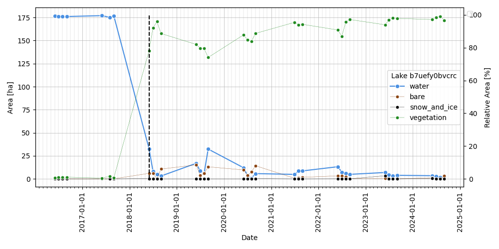
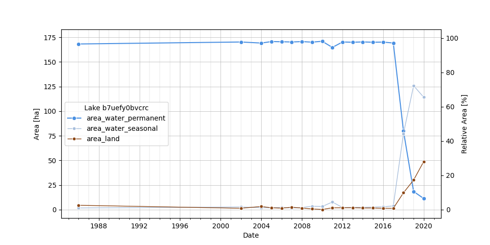

water-timeseries-v2🔗
Automated analysis of water timeseries data from satellite imagery and remote sensing sources.
Documentation🔗
📖 Full Documentation: View Documentation
The documentation includes:
- Getting started guide
- API reference (auto-generated from code)
- Usage examples
- Tutorial notebooks
Documentation is automatically built and deployed on every push to main using GitHub Actions.
Features🔗
- Dynamic World Handler: Process Dynamic World land cover classifications
- JRC Water Handler: Handle JRC water occurrence and classification data
- Data Normalization: Automatic normalization and scaling of time series
- Breakpoint Detection: Statistical (SimpleBreakpoint) and advanced (RBEAST) methods for detecting water extent changes
- Batch Processing: Efficient processing of multiple spatial entities
- Comprehensive Testing: Full test coverage including breakpoint detection, normalization, and integration tests
Quick Start🔗
Python API🔗
from water_timeseries.dataset import DWDataset
import xarray as xr
# Load data
ds = xr.open_dataset("water_data.nc")
# Process with Dynamic World handler
processor = DWDataset(ds)
# Access time series
water_extent = processor.ds_normalized[processor.water_column]
# Access normalized time series
water_extent = processor.ds_normalized["water"]
Command Line Interface🔗
The package provides a hierarchical CLI tool water-timeseries for running breakpoint detection on water datasets.
Installation🔗
# Using uv (recommended)
uv sync
# Or using pip
pip install .
Basic Usage🔗
Show Help for cli🔗
# Show help
uv run water-timeseries --help
Main CLI tools🔗
# Show breakpoint-analysis-historical subcommand help
uv run water-timeseries breakpoint-analysis-historical
# Show breakpoint-analysis-historical subcommand help
uv run water-timeseries breakpoint-analysis-nrt
# Show plot-timeseries subcommand help
uv run water-timeseries plot-timeseries
# run dashboard
uv run water-timeseries dashboard
Using a Config File🔗
You can also use a YAML configuration file:
uv run water-timeseries breakpoint-analysis-historical --config-file configs/config.yaml
Example config file for breakpoint-analysis-historical:
# config.yaml
water_dataset_file: /path/to/data.zarr
output_file: /path/to/output.parquet
# Optional: vector dataset for bbox filtering
vector_dataset_file: /path/to/lakes.parquet
# Bounding box filter (optional)
bbox_west: -160
bbox_east: -155
bbox_north: 68
bbox_south: 66
# Processing options
chunksize: 100
n_jobs: 20
min_chunksize: 10
Breakpoint Analysis Historical🔗
Run historical breakpoint analysis on water dataset. This command performs breakpoint detection on lake water area time series data to identify significant changes in water availability.
| Option | Short | Description | Default |
|---|---|---|---|
water_dataset_file |
Path to water dataset file in zarr or parquet format. Can be specified via CLI argument or config file | Required* | |
output_file |
Path to output parquet file where results will be saved. A YAML config file with the same name will also be created with the parameters used | Required* | |
--config-file |
Path to a YAML or JSON configuration file containing default parameters. CLI arguments take priority over config file values | None |
|
--vector-dataset-file |
-v |
Path to vector dataset file (GeoParquet) containing lake boundary geometries for spatial analysis | None |
--chunksize |
-c |
Number of lake IDs to process per chunk. Controls memory usage during parallel processing | 100 |
--parallel-backend |
Parallelization backend to use. Options: "joblib" or "ray" | ray |
|
--break-method |
Breakpoint detection method. Options: "simple" (rolling window statistical detector) or "beast" (Bayesian RBEAST-based detector) | beast |
|
--n-jobs |
-j |
Number of parallel jobs. Use >1 for parallel processing | 1 |
--min-chunksize |
-m |
Minimum chunk size for parallel processing | 10 |
--bbox-west |
Western boundary of bounding box for spatial filtering (minimum longitude) | None |
|
--bbox-south |
Southern boundary of bounding box for spatial filtering (minimum latitude) | None |
|
--bbox-east |
Eastern boundary of bounding box for spatial filtering (maximum longitude) | None |
|
--bbox-north |
Northern boundary of bounding box for spatial filtering (maximum latitude) | None |
|
--output-geometry |
Whether to include geometry data in the output | True |
|
--output-geometry-all |
Whether to include geometry for all lakes (not just those with breakpoints) | True |
|
--logfile |
Path to log file | Auto-generated | |
--verbose |
-v |
Verbosity level. 0 = INFO (default), 1 or more = DEBUG | 0 |
*Can also be provided via config file
Example usage:
# Basic usage with required arguments
uv run water-timeseries breakpoint-analysis-historical tests/data/lakes_dw_test.zarr output.parquet
# With custom chunk size and parallel jobs
uv run water-timeseries breakpoint-analysis-historical tests/data/lakes_dw_test.zarr output.parquet -c 100 -j 20
# Using a configuration file
uv run water-timeseries breakpoint-analysis-historical --config-file configs/config.yaml
# Spatial filtering with bounding box
uv run water-timeseries breakpoint-analysis-historical data.zarr output.parquet \
--bbox-west 100 --bbox-south 20 --bbox-east 110 --bbox-north 30
Breakpoint Analysis NRT🔗
Pre-compute near real-time drained-lake results for one month or a date range.
Single-month mode (--analysis-date): runs for exactly one month and writes results to --output-file.
Range mode (--analysis-date-start + --analysis-date-end): runs for every month in the inclusive range and writes one parquet file per month to --output-dir, auto-named nrt_<YYYY-MM>_drain_breaks.parquet. Already-present files are skipped unless --no-resume is set.
| Option | Short | Description | Default |
|---|---|---|---|
dataset_file |
Path to the DW dataset file (.ncin / .nc NetCDF or .zarr) |
Required | |
--analysis-date |
Single month to analyse, as YYYY-MM (e.g. 2024-01). Mutually exclusive with --analysis-date-start / --analysis-date-end |
None |
|
--analysis-date-start |
First month of an inclusive range, as YYYY-MM. Must be used together with --analysis-date-end |
None |
|
--analysis-date-end |
Last month of an inclusive range, as YYYY-MM. Must be used together with --analysis-date-start |
None |
|
--output-file |
Destination parquet file (single-month mode only). Defaults to nrt_<analysis_date>_drain_breaks.parquet next to dataset_file |
None |
|
--output-dir |
Destination directory for range mode. One file per month is written as nrt_<YYYY-MM>_drain_breaks.parquet. Defaults to the parent directory of dataset_file |
None |
|
--no-resume |
Range mode only. When set, re-process months even if their output file already exists in --output-dir |
False |
|
--drain-threshold |
water_residual threshold below which a lake is classified as drained |
-0.25 |
|
--data-aggregation-period |
Aggregation period for NRT analysis | all |
|
--lake-chunk-size |
Lakes processed per chunk. Smaller = less RAM | 5000 |
|
--n-jobs |
-j |
Parallel ARIMA workers per chunk. Reduce if RAM is tight | 4 |
--vector-file |
Optional GeoParquet vector file. When provided, only the id_geohash values present in that file are processed |
None |
|
--config-file |
Path to a YAML or JSON configuration file containing default parameters. CLI arguments take priority over config file values | None |
|
--logfile |
Path to log file | Auto-generated | |
--verbose |
-v |
Verbosity level (0 = INFO, 1 = DEBUG) | 0 |
Example usage:
# Single month
uv run water-timeseries breakpoint-analysis-nrt downloads/lakes_dw_V2d.nc \
--analysis-date 2024-01 \
--output-file precomputed/nrt/nrt_2024-01_drain_breaks.parquet
# Date range (one file per month written to --output-dir)
uv run water-timeseries breakpoint-analysis-nrt downloads/lakes_dw_V2d.nc \
--analysis-date-start 2024-01 \
--analysis-date-end 2024-06 \
--output-dir precomputed/nrt
# Resume a previously interrupted range run
uv run water-timeseries breakpoint-analysis-nrt downloads/lakes_dw_V2d.nc \
--analysis-date-start 2024-01 \
--analysis-date-end 2024-12 \
--output-dir precomputed/nrt
# Force re-process all months in range
uv run water-timeseries breakpoint-analysis-nrt downloads/lakes_dw_V2d.nc \
--analysis-date-start 2024-01 \
--analysis-date-end 2024-12 \
--output-dir precomputed/nrt \
--no-resume
Plot Timeseries🔗
Plot time series for a specific lake.
| Option | Short | Description | Default |
|---|---|---|---|
water_dataset_file |
Path to water dataset file (zarr or netCDF). Can be specified via CLI argument or config file | Required* | |
lake_id |
Geohash ID of the lake to plot. Can be specified via CLI argument or config file | Required* | |
--output-figure |
Path to save the output figure | None |
|
--break-method |
Break method to overlay (beast or simple) | None |
|
--config-file |
Path to a YAML or JSON configuration file containing default parameters. CLI arguments take priority over config file values | None |
|
--show |
Whether to display the plot | True |
|
--logfile |
Path to log file | Auto-generated | |
--verbose |
-v |
Verbosity level (-v for DEBUG) |
0 |
*Can also be provided via config file
Example usage:
# Plot lake timeseries
uv run water-timeseries plot-timeseries data.zarr --lake-id b7uefy0bvcrc
# Save figure to file
uv run water-timeseries plot-timeseries data.zarr --lake-id b7uefy0bvcrc --output-figure plot.png
# Use config file
uv run water-timeseries plot-timeseries --config-file configs/plot_config.yaml
# Plot lake timeseries with break detection
uv run water-timeseries plot-timeseries tests/data/lakes_dw_test.zarr --lake-id b7uefy0bvcrc --output-figure examples/dw_example_b7uefy0bvcrc.png --break-method beast

# Plot lake timeseries with JRC data
uv run water-timeseries plot-timeseries tests/data/lakes_jrc_test.zarr --lake-id b7uefy0bvcrc --output-figure examples/jrc_example_b7uefy0bvcrc.png --break-method beast

Build PMTiles🔗
Build the shared base archive: one .pmtiles of every lake polygon, rendered as the
grey base layer by both view modes. The per-year and per-month drainage data lives in
separate overlays -- see Building Map Tilesets for the full
picture, and build-drained-pmtiles / build-nrt-pmtiles for the overlays.
| Option | Short | Description | Default |
|---|---|---|---|
vector_file |
Path to input GeoParquet file with lake polygons | Required | |
output_file |
Path to output .pmtiles file |
Required | |
--keep-geojsonl |
Keep intermediate GeoJSONL file after building PMTiles | False |
|
--config-file |
Path to a YAML or JSON configuration file containing default parameters. CLI arguments take priority over config file values | None |
|
--logfile |
Path to log file | Auto-generated | |
--verbose |
-v |
Verbosity level (-v for DEBUG) |
0 |
Example usage:
# Build the shared base archive
uv run water-timeseries build-pmtiles lakes.parquet tiles/lakes.pmtiles
# Read the paths out of a dashboard config instead
uv run water-timeseries build-pmtiles --config-file configs/dashboard_panarctic.yaml
# Keep intermediate GeoJSONL file for debugging
uv run water-timeseries build-pmtiles lakes.parquet tiles/lakes.pmtiles --keep-geojsonl
Prerequisites: tippecanoe must be installed (brew install tippecanoe).
Upload the resulting .pmtiles file to object storage (S3, GCS, etc.) and pass --pmtiles-url to the dashboard, or use --pmtiles-file for local development.
Main Classes🔗
Datasets🔗
- DWDataset: Dynamic World land cover processor
- JRCDataset: JRC water classification processor
Download🔗
- EarthEngineDownloader: Download data from Google Earth Engine
Breakpoints🔗
- SimpleBreakpoint: Statistical breakpoint detection
- BeastBreakpoint: Advanced RBEAST-based detection
Interactive Dashboard🔗
The package includes an interactive Streamlit dashboard for visualizing lake polygons and time series data.
Running the Dashboard🔗
uv run water-timeseries dashboard
Features🔗
- Map Viewer: Interactive map displaying lake polygons from parquet files
- Hover Tooltips: View attributes (id_geohash, Area_start_ha, Area_end_ha, NetChange_ha, NetChange_perc)
- Click Selection: Click on a polygon to select it and view its time series
- Time Series Plot: Automatic visualization of water extent over time
- Automatic Download: If the selected lake's data is not in the cached dataset, it automatically downloads from Google Earth Engine
- Popup View: Click "Open Time Series in Popup" for a larger view
- EE Project Config: Set your Google Earth Engine project in the sidebar
Dashboard Configuration🔗
The dashboard accepts the following optional arguments:
| Parameter | Description | Default |
|---|---|---|
vector_file |
Path to vector dataset file (GeoParquet) | tests/data/lake_polygons.parquet |
dw_dataset_file |
Path to Dynamic World dataset file (zarr) | tests/data/lakes_dw_test.zarr |
jrc_dataset_file |
Path to JRC dataset file (zarr) | tests/data/lakes_jrc_test.zarr |
precomputed_nrt_dir |
Directory with pre-computed NRT parquet files. Auto-detected from precomputed/nrt/ in the repo root when present |
None |
offline_mode |
If set, disables Google Earth Engine download functionality. Use this when running without internet access or Earth Engine authentication | False |
ee_project |
Google Earth Engine project ID. Required for EE downloads | None |
dw_start_year |
Start year for Dynamic World dataset time series | 2017 |
dw_end_year |
End year for Dynamic World dataset time series | 2025 |
dw_start_month |
Start month (1-12) for Dynamic World dataset time series filtering | 6 (June) |
dw_end_month |
End month (1-12) for Dynamic World dataset time series filtering | 9 (September) |
viz_configuration |
Visualization configuration for the map viewer. Valid options: "drainage_year" (data displayed by drainage year), "nrt_drainage" (near-real-time drainage data) |
drainage_year |
port |
Port to run the dashboard on | 8501 |
logfile |
Path to log file | Auto-generated |
verbose |
Verbosity level (-v for DEBUG) |
0 (INFO) |
config_file |
Path to a YAML or JSON configuration file containing default parameters. CLI arguments take priority over config file values | None |
Example usage:
uv run water-timeseries dashboard
uv run water-timeseries dashboard --vector-file data/lakes.parquet --dw-dataset-file data/lakes.zarr
uv run water-timeseries dashboard --offline-mode
uv run water-timeseries dashboard --ee-project my-ee-project
uv run water-timeseries dashboard --dw-start-year 2017 --dw-end-year 2026
uv run water-timeseries dashboard --config-file configs/dashboard_config.yaml
Example config file:
# dashboard with downloading time-series on the fly for 2017-2026 (May-October)
vector_file: notebooks_temporary/drain_2026-05_high_confidence.parquet
ee_project: my-ee-project
dw_start_year: 2017
dw_end_year: 2026
dw_start_month: 5
dw_end_month: 10
Documentation Links🔗
- Getting Started - Installation and setup guide
- Examples - Usage examples and tutorials
- NRT Monthly Update - What to refresh when a new month of near-real-time data lands
- API Reference - Complete API documentation
Contributing🔗
We welcome contributions! Please ensure you:
- Add docstrings to new functions and classes (Google style)
- Update documentation in the
docs/folder - Run tests before submitting PRs
License🔗
[Add your license here]
Author🔗
Ingmar Nitze